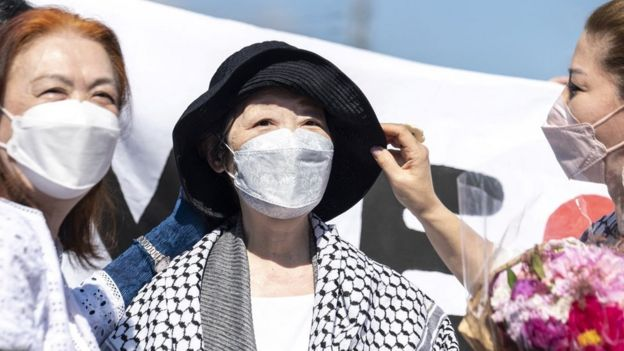

News
Living underground in Kharkhiv for three months
Families who have been sheltering in a metro station since the start of the war now fear eviction.
EUROPE

Japanese Red Army founder freed after 20 years
Fusako Shigenobu, 76, was jailed for her part in a hostage siege at the French embassy in the Hague.
ASIAJapan opens up to foreign tourists after two years
Visitors from 98 countries will be allowed to enter, but some restrictions still remain.
ASIA